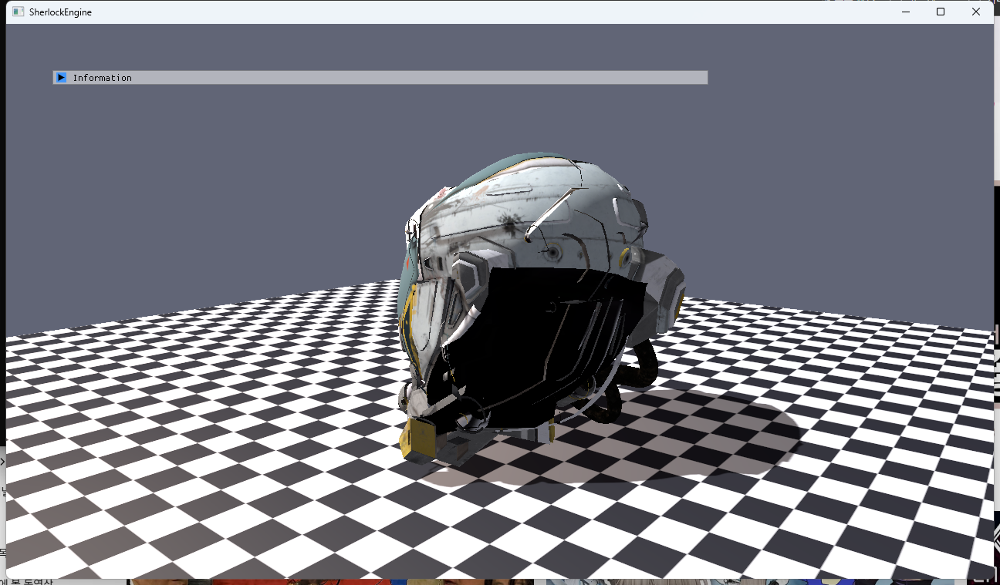
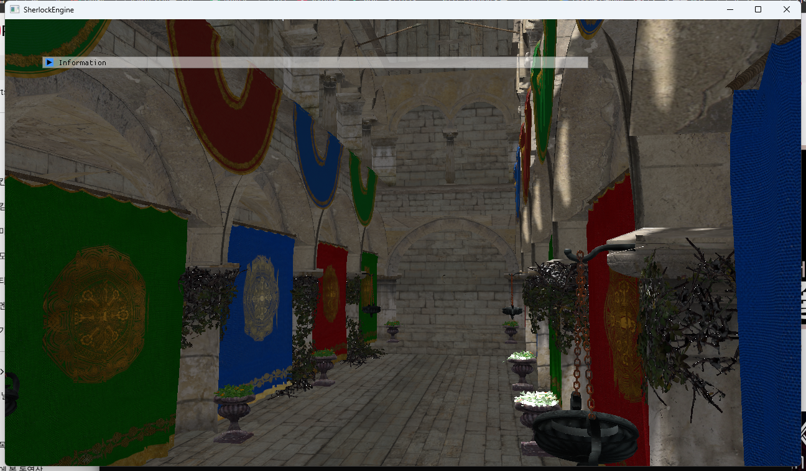
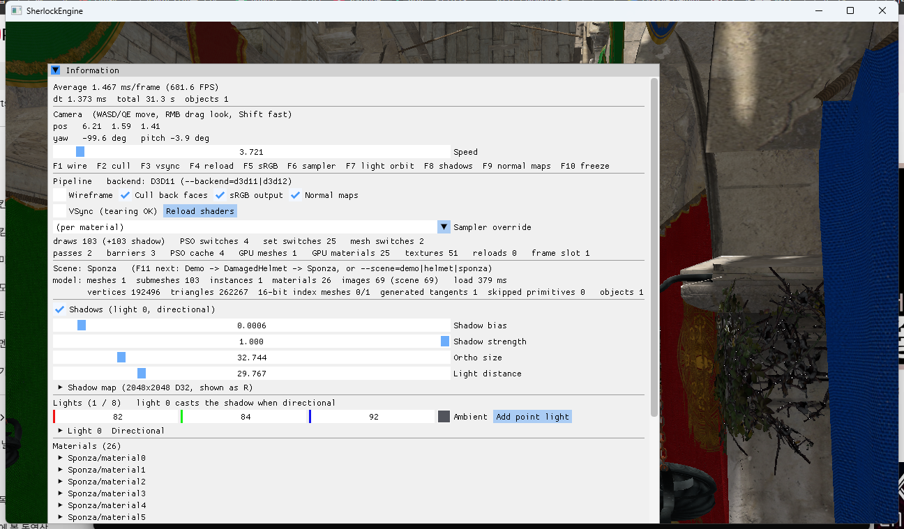
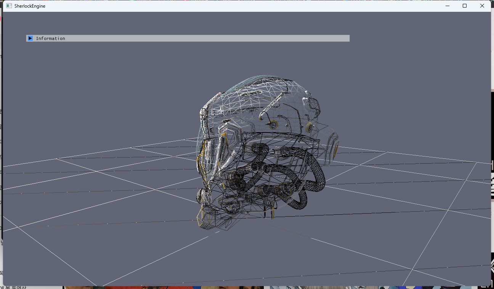

9단계 · 모델 로딩 (glTF)
RHI 위에서 처음 만드는 "큰 기능"입니다. glTF 2.0 파일을 읽어 Model(메시·재질·이미지·인스턴스)로 만들고 Scene에 얹습니다. Khronos 의 DamagedHelmet(텍스처 내장 .glb, 탄젠트 없음)과 Sponza(.gltf + 69개 외부 이미지, 재질 26개, 알파 마스크 식물)가 텍스처·노멀 맵·그림자와 함께 그려지고, D3D11 과 D3D12 의 화면 차이는 각각 1픽셀·7픽셀입니다. 4단계의 Material/ResourceSet 설계가 실제 에셋의 다중 재질과 서브메시를 그대로 받아냈고, 인덱스 크기(D10)는 이 단계에서 16/32비트 자동 선택으로 바뀌었습니다.
로더는 CPU 데이터만 만든다(Model). Scene::AddModel 이 메시·재질·이미지 바이트를 씬으로 옮기고 노드마다 GameObject 를 만든다. GPU 자원은 3~5단계처럼 Renderer 캐시가 처음 그릴 때 만든다 — 텍스처에만 새 경로가 하나 생겼다: 재질 이름 → 씬 이미지 바이트 → TextureLoader::LoadFromMemory. 메시는 서브메시 범위(인덱스 시작·개수·재질 슬롯)를 갖고 Renderer 가 범위마다 DrawIndexed 한다. 좌표계는 Z 를 뒤집어 왼손으로, 탄젠트는 glTF 의 "초록 = 위" 관례에 맞춰 w 부호를 정한다.
1.요약
| 항목 | glTF 2.0 | SherlockEngine | 변환 |
|---|---|---|---|
| 좌표계 | 오른손, +Y 위, 앞면 +Z, 미터1 | 왼손, +Y 위, CW 앞면 | P·N·T 의 z 부호 반전, 노드 행렬은 M·A·M, 탄젠트 w 반전. 반사가 CCW → CW 를 만들어 인덱스 순서는 그대로 |
| 정점 | POSITION / NORMAL / TANGENT / TEXCOORD_0 / COLOR_0, accessor 마다 다른 타입·정규화 | VERTEX 64B 하나 | cgltf_accessor_read_float 가 정규화·스트라이드를 풀어 준다. 없는 속성은 기본값(흰색, 노멀 +Y, UV 0) |
| 탄젠트 | 있을 수도 없을 수도. 없으면 MikkTSpace 권장1 | tangent.xyz + w, B = cross(N,T)·w | 있으면 그대로(+ w 반전). 없으면 Lengyel 방식2으로 생성, w 는 B = −dP/dv 가 되게 |
| 메시 | mesh = primitive[] (재질마다 하나) | Mesh = 정점·인덱스 하나 + Submesh[] | primitive 를 이어 붙이고 인덱스에 baseVertex 를 더한다. 삼각형이 아닌 primitive 는 건너뛰고 센다 |
| 인덱스 | uint8 / uint16 / uint32 accessor | CPU 32비트, GPU 16 또는 32비트 (D10) | 정점 ≤ 65,535 면 업로드 시 16비트로 변환, GpuMesh::indexFormat |
| 노드 | 트리, TRS 또는 matrix, 열우선 | GameObject + Transform 의 pre-matrix | cgltf_node_transform_world → 행벡터 행렬(전치가 곧 변환) → 반사 켤레 |
| 재질 | pbrMetallicRoughness, normalTexture(scale), alphaMode, doubleSided | Blinn-Phong Material | baseColorFactor·Texture(sRGB) → baseColor·albedo; roughness → shininess 근사; normal.scale → normalStrength; MASK → alphaCutoff; BLEND → 컷아웃 0.5 근사 |
| 이미지 | bufferView(내장) / data: URI / 외부 파일 | Scene 의 이름 → 인코딩 바이트 | 로더는 디코딩하지 않는다. Renderer 텍스처 캐시가 재질이 요구하는 색공간으로 DirectXTex 디코딩7 |
| 샘플러 | wrap/filter 열거 | SamplerPreset 5개 | nearest → PointWrap, clamp → LinearClamp, 그 외 AnisotropicWrap |
| 바운드 | accessor min/max (선택) | Mesh AABB + Model AABB | 정점에서 직접 계산. 인스턴스 여덟 꼭짓점을 월드로 옮겨 합집합. 카메라 배치·그림자 직교 크기에 쓴다 |
2.왜 이 단계인가
로드맵은 이 단계의 목적을 "실제 에셋의 서브메시·다중 재질·인덱스 크기가 Material/ResourceSet 설계를 검증한다"로 적었습니다. 지금까지의 씬은 프리미티브 일곱 개와 재질 일곱 개였습니다. Sponza 는 재질 26개가 서브메시 103개에 흩어져 있고 이미지 69개 중 51개가 실제로 쓰이며, 식물은 알파 마스크가 없으면 초록 사각형으로 보입니다. DamagedHelmet 은 탄젠트가 없어 노멀 맵을 쓰려면 생성해야 하고, 이미지가 GLB 안에 들어 있어 "파일 경로 → 텍스처" 경로만으로는 부족합니다. 두 에셋이 4·5·6단계에서 미룬 결정을 전부 건드립니다.
결과적으로 Material 과 ResourceSet 은 손대지 않았습니다. 바뀐 것은 (1) 재질에 alphaCutoff 한 필드(상수버퍼 48 → 64B), (2) 메시에 서브메시 범위, (3) 오브젝트에 재질 슬롯 배열, (4) 텍스처 캐시에 "씬 이미지" 경로, (5) 인덱스 포맷 선택입니다. Renderer 의 드로우 루프는 DrawIndexed(count, start) 로 범위를 받는 것 외에는 그대로입니다.
3.로더 선택: tinygltf → cgltf
로드맵은 tinygltf 를 권장했습니다. vcpkg 매니페스트에 넣고 설치하자 포트가 GitHub 의 소스 아카이브를 받아 SHA512 를 대조하는 단계에서 실패했습니다 — 3.0.0 과 2.9.7 모두 "unexpected hash". GitHub 이 아카이브를 다시 압축해 해시가 바뀐 경우입니다. 포트를 오버레이로 복사해 해시만 고치면 되지만, 검증 해시를 손으로 바꾸는 것은 이 세션의 정책이 막았습니다(무결성 검증 약화). 그래서 같은 역할을 하는 다른 라이브러리를 골랐습니다.
cgltf3는 헤더 하나짜리 C99 glTF 로더(MIT)로 Filament·raylib·bgfx 가 씁니다. tinygltf 와 달리 이미지를 디코딩하지 않고 URI 와 bufferView 만 넘겨 주는데, 오히려 이 점이 잘 맞았습니다 —5단계의 TextureLoader(DirectXTex) 가 이미 PNG/JPG/DDS 를 디코딩하고 밉을 만들며 sRGB 라벨을 붙입니다. stb_image 를 하나 더 들일 이유가 없습니다. 접점은 Graphics/Model.cpp 한 파일뿐이라 나중에 tinygltf 나 fastgltf 로 바꿔도 Model 의 모양은 그대로입니다.
// Graphics/Model.cpp — cgltf 는 이 파일에서만 구현을 켠다
#define CGLTF_IMPLEMENTATION
#pragma warning(push)
#pragma warning(disable : 4996) // cgltf 내부의 fopen/strncpy (CRT 보안 경고)
#include <cgltf.h>
#pragma warning(pop)
cgltf_parse_file(&options, path, &data); // .gltf 또는 .glb 자동 판별
cgltf_load_buffers(&options, data, path); // .bin / GLB 청크 / data: URI
cgltf_validate(data); // 경고만4.Model 의 모양과 경계
// Graphics/Model.h
struct ModelImage { std::string name; std::vector<uint8_t> encoded; }; // PNG/JPG 바이트 그대로
struct ModelInstance { uint32_t meshIndex; XMFLOAT4X4 world; std::string name; };
struct Model
{
std::vector<Mesh> meshes; // 서브메시 범위 포함
std::vector<Material> materials; // materialSlot → 인덱스. 마지막은 "재질 없음" 슬롯
std::vector<ModelImage> images;
std::vector<ModelInstance> instances;
Bounds bounds; ModelStats stats;
};
bool ModelLoader::LoadGltf(const std::wstring& path, const Options&, Model& out);
// Scene::AddModel — 메시·재질·이미지를 옮기고 인스턴스마다 GameObject
GameObject& object = AddObject(meshes[instance.meshIndex], materials.back(), name);
object.SetSlotMaterials(materials); // 슬롯 번호 = 모델 재질 인덱스
object.GetTransform() = transform; // 모델 전체 배치
object.GetTransform().SetPreTransform(XMLoadFloat4x4(&instance.world)); // 노드 변환경계는 3단계의 D3 그대로입니다: Model·Scene 은 Device 를 모르고, GPU 버퍼·텍스처·ResourceSet 은 Renderer 캐시가 첫 드로우에서 만듭니다. 그래서 로더는 D3D 헤더 없이 컴파일되고(격리 grep 0건), 같은 Model 을 두 백엔드가 그립니다. 노드의 월드 변환은 임의 행렬이라 Transform 의 오일러 각으로 분해하지 않고 SetPreTransform 으로 S·R·T 앞에 곱합니다. 모델 전체를 옮길 때는 기존 position/rotation/scale 을 그대로 씁니다.
5.좌표계: 오른손 → 왼손
glTF 는 오른손 좌표계에 +Y 위, 앞면 +Z 이고, 양의 행렬식 변환에서 삼각형 앞면은 반시계(CCW)입니다1. 엔진은 왼손에 시계(CW) 앞면입니다(1단계 frontCounterClockwise = false). 정점의 z 부호를 뒤집는 반사 M = diag(1, 1, −1) 을 쓰면 와인딩이 CCW → CW 로 바뀌어 인덱스 순서를 건드릴 필요가 없습니다. 인덱스 순서만 뒤집는 대안을 쓰면 모델이 거울상으로 보입니다(헬멧 글자가 뒤집힘).
// 정점: P, N, T 의 z 반전. 탄젠트 w 는 부호 반전 (6절)
vertex.z = p[2] * zSign; vertex.nz = n[2] * zSign; vertex.tz = t[2] * zSign; vertex.tw = -t[3];
// 노드: 행벡터 행렬 A 에 대해 A' = M·A·M. 반사된 정점 P' = P·M 에 A' 를 곱하면 (P·A)·M — 원래 위치의 거울상
const XMMATRIX mirror = XMMatrixScaling(1, 1, -1);
const XMMATRIX world = mirror * LoadGltfMatrix(m) * mirror * rootScale;cgltf_node_transform_world 는 glTF 관례대로 열우선 16개를 줍니다. 원소를 순서대로 XMMATRIX 의 행에 넣으면 전치가 되는데, 열벡터 행렬 W 를 행벡터용으로 바꾼 것이 정확히 Wᵀ 이므로 그대로 쓰면 됩니다. 반사는 회전을 켤레로 뒤집습니다(RotX(θ) → RotX(−θ)) — 거울 속 물체는 반대로 돌아도 "똑바로" 서 있으므로 결과는 올바릅니다. 헬멧이 바닥 위에 서 있고 Sponza 의 아치가 위를 향하는 것으로 이를 확인할 수 있습니다.
6.탄젠트: 있으면 뒤집고, 없으면 만든다
6단계의 정점 포맷은 tangent.w 로 손방향(handedness)을 저장하고 픽셀 셰이더가 B = cross(N, T)·w 로 종탄젠트를 되살립니다. glTF 도 같은 식입니다: B = (N × T)·w 이고 노멀 텍스처는 "+X 오른쪽, +Y 위, +Z 는 보는 쪽"1. 문제는 "위"의 뜻입니다. 6단계의 프리미티브와 bumps_normal.png 는 B = dP/dv(v 가 증가하는 아래쪽)로 만들었습니다 — DirectX 식 노멀 맵. glTF 의 초록 채널은 v 가 감소하는 쪽, 즉 B = −dP/dv 입니다 — OpenGL 식. 같은 셰이더로 둘을 그리려면 w 의 부호만 다르면 됩니다. 노멀 맵을 뒤집거나 재질에 플래그를 두는 대신, 탄젠트의 손방향이 정확히 그 일을 합니다.
// Mesh::ComputeTangents (Lengyel [2]): 삼각형마다 dP/du, dP/dv 를 풀어 정점에 누적
const float r = 1.0f / (du1 * dv2 - du2 * dv1); // UV 가 퇴화하면 건너뜀
sdir = (e1 * dv2 - e2 * dv1) * r; tdir = (e2 * du1 - e1 * du2) * r;
...
t = normalize(t - n * dot(n, t)); // Gram-Schmidt
float w = dot(cross(n, t), tdir) < 0 ? -1 : 1; // cross(N,T) 가 dP/dv 쪽이면 +1
if (!bitangentTowardsIncreasingV) w = -w; // glTF: B = −dP/dv (초록 = 위)파일이 TANGENT 를 주면(Sponza 는 MikkTSpace 로 만든 탄젠트를 포함5) 그대로 쓰되 5절의 반사 때문에 w 를 뒤집습니다: cross(MN, MT) = det(M)·M·cross(N, T) = −M·cross(N, T) 이므로 반사된 B 를 얻으려면 w' = −w 입니다. 직접 만들 때는 반사된 정점으로 계산하므로 손댈 것이 없습니다. DamagedHelmet 은 TANGENT 가 없어 생성 경로를, Sponza 는 제공 경로를 지납니다 — 둘 다 노멀 맵을 끄면(F9) 화면이 바뀝니다(12절).
7.서브메시와 16/32비트 인덱스 (D10)
// Graphics/Mesh.h
struct Submesh { uint32_t indexStart, indexCount, materialSlot; }; // 프리미티브는 전체를 덮는 하나
// Renderer::BuildDrawList — 서브메시마다 DrawItem. 재질은 슬롯 → 오브젝트 기본 → Renderer 기본
for (const Submesh& submesh : mesh->GetSubmeshes())
{
item.material = object.GetMaterialForSlot(submesh.materialSlot) ?: &m_defaultMaterial;
item.indexStart = submesh.indexStart; item.indexCount = submesh.indexCount;
}
// 정렬 PSO → Material → Mesh → indexStart. 같은 메시의 다른 서브메시는 VB/IB 를 다시 바인딩하지 않는다
cmd.DrawIndexed(item.indexCount, item.indexStart, 0);Sponza 는 glTF mesh 하나에 primitive 103개입니다. 하나의 정점·인덱스 버퍼로 합치고 범위만 나누면 프레임에 메시 전환 1회, 재질(ResourceSet) 전환 25회, 드로우 103회가 됩니다 — 패널의 "mesh switches 2, set switches 25, draws 103" 이 그 수치입니다. 4단계가 재질 전환과 메시 전환을 따로 세도록 통계를 만든 덕에 정렬이 의도대로 동작하는지 바로 보입니다.
D10. CPU 쪽 Mesh::indices 는 32비트를 유지하고, GetOrCreateGpuMesh 가 정점 수 ≤ 65,535 면 16비트 배열로 변환해 올리며 GpuMesh::indexFormat 을 기억합니다. 드로우 루프는 SetIndexBuffer(handle, gpuMesh->indexFormat) 로 넘기기만 합니다. D3D 의 인덱스 버퍼 포맷은 R16_UINT 와 R32_UINT 둘뿐이므로6 분기는 정확히 그 둘입니다. 헬멧(14,556 정점)은 16비트, Sponza(192,496 정점, 메시 하나로 합쳤으므로)는 32비트가 됩니다. 프리미티브 씬은 전부 16비트가 되었고 화면은 바뀌지 않았습니다.
8.재질 대응과 알파 컷아웃
glTF 의 재질은 metallic-roughness PBR 이고 엔진은 Blinn-Phong 입니다. 12단계(PBR) 전까지는 근사로 대신합니다: baseColorFactor → baseColor, baseColorTexture → 알베도(sRGB), roughnessFactor → shininess = 8 + 120·(1−r)², 스페큘러는 0.04 + 0.3·(1−r) 을 금속성만큼 기본색 쪽으로 섞습니다. normalTexture 의 scale 은 6단계의 normalStrength 와 뜻이 같습니다(xy 배율). doubleSided 는 그대로 PSO 의 컬링을 끕니다.
alphaMode: MASK 는 알파가 alphaCutoff 미만인 픽셀을 버립니다1. Sponza 의 식물과 쇠사슬이 이 방식을 씁니다. 재질 상수버퍼에 alphaCutoff(0 = 끔)를 더해 64B 가 되었고(패딩 float3 포함, static_assert 갱신), 픽셀 셰이더가 알베도를 샘플한 직후 clip(surface.a − alphaCutoff) 합니다. BLEND 는 아직 블렌딩 상태가 없으니 컷아웃 0.5 로 근사합니다. 그림자 패스는 픽셀 셰이더가 없어 컷아웃 재질도 사각형 그림자를 드리웁니다 — 12단계에서 알파 테스트 그림자 PSO 변형으로 풀 일입니다.
9.이미지: 씬이 바이트를, Renderer 가 색공간을
5단계의 텍스처 캐시는 "이름 → Assets/Textures 의 파일"이었습니다. GLB 의 이미지는 파일이 아니고, 같은 이미지가 어떤 재질에서는 색(sRGB), 다른 재질에서는 데이터(선형)일 수 있으므로 디코딩 시점에 재질이 필요합니다. 그래서 로더는 디코딩하지 않고 인코딩된 바이트를 "<모델>/<번호> <uri>" 이름으로 넘기고, Scene 이 그 바이트를 이름으로 들고 있습니다. Renderer 의 GetOrLoadTexture(name, srgb, scene) 가 "builtin: → 씬 이미지 → 파일" 순으로 찾아 TextureLoader::LoadFromMemory(DirectXTex LoadFromWICMemory/LoadFromDDSMemory7)로 디코딩합니다. 5단계의 sRGB 규칙(라벨만 붙이고 값은 건드리지 않음, 밉은 선형에서 평균)이 그대로 적용됩니다.
외부 파일(Sponza)은 URI 의 %20 같은 이스케이프를 cgltf_decode_uri 로 풀고 모델 폴더 기준으로 읽어 같은 바이트 경로로 넣습니다. data: URI 도 base64 를 풀어 넣습니다. 로드 실패는 경고 후 흰색 텍스처로 대체됩니다(5단계와 같음).
10.씬 전환과 캐시 무효화
F11(또는 --scene=demo|helmet|sponza)이 씬을 바꿉니다. Renderer 캐시는 메시·재질 포인터를 키로 쓰므로 씬을 비우기 전에 Renderer::InvalidateScene(scene, releaseTextures) 를 먼저 불러 GPU 버퍼·ResourceSet·(내장이 아닌) 텍스처를 파괴합니다. 순서가 바뀌면 새 메시가 우연히 같은 주소를 받아 옛 GPU 버퍼로 그려지는 종류의 버그가 생깁니다. D3D12 에서는 파괴가 8단계의 지연 해제 목록을 지나므로 실행 중인 프레임과 충돌하지 않습니다. 씬마다 그림자 직교 크기·거리·바이어스를 바운드에 맞춰 다시 정합니다(헬멧 10/12, Sponza 는 가장 긴 반경 × 2.2).
11.함정과 해결
- tinygltf 포트 해시. 3절. cgltf 로 대체. 매니페스트 한 줄과 Model.cpp 한 파일만 바뀐다.
- cgltf 의 CRT 경고.
fopen·strncpy가 C4996 으로 빌드를 막았다. 헤더 include 만#pragma warning(disable: 4996)로 감쌌다 — 전역_CRT_SECURE_NO_WARNINGS는 우리 코드의 경고까지 끈다. - 서브메시 재질 슬롯. primitive.material 은 포인터라
material − data->materials로 인덱스를 얻는다. 재질이 없는 primitive 를 위해 마지막 슬롯에 기본 재질을 하나 더 둔다. - 탄젠트 손방향의 두 관례. 6절. 엔진 프리미티브(B = dP/dv)와 glTF(B = −dP/dv)를 같은 셰이더로 그리려면 생성 시 w 의 부호만 다르게. 반사까지 겹치면 제공된 w 도 뒤집는다.
- 실패한 텍스처가 흰색 핸들을 공유. 5단계부터 로드 실패는
m_whiteTexture를 캐시에 넣었다.InvalidateScene이 그것을 파괴하면 기본 재질이 깨지므로 내장 핸들과 같은 항목은 지우기만 한다. - Sponza 첫 시점. 바운드 중심 기준 자동 배치가 두 번 벽 안이었다. 안뜰은 x 축을 따라 길고 z 축 중앙이 열려 있으므로 x 한쪽 끝 + z 살짝 옆에서 대각선으로 본다.
- 금속 바이저가 검다. DamagedHelmet 의 바이저는 metallic 1 에 어두운 기본색이라 환경 반사 없이는 검게 나온다. Blinn-Phong 근사의 한계이고 12단계(IBL) 의 몫이다.
12.검증과 스크린샷
- 완료 기준 "glTF 모델이 텍스처·노멀맵·그림자와 함께 두 백엔드에서 같게 표시된다" — F10 고정 화면을 클라이언트 영역 904,392픽셀로 비교: DamagedHelmet D3D11 vs D3D12 1픽셀(Δ1), Sponza 7픽셀(Δ7). 비등방 필터의 반올림 차이 수준. D3D12 Debug Layer·GBV 메시지 0.
- 노멀 맵 끔(F9): 헬멧 화면에서 162,982픽셀 변화 — 생성된 탄젠트로 노멀 맵이 실제로 작동한다. 그림자 끔(F8): 47,890픽셀 변화(바닥의 헬멧 그림자).
- DamagedHelmet(.glb): 메시 1, 정점 14,556, 삼각형 15,452, 이미지 5(2048², 밉 12), 재질 1(+기본), 탄젠트 생성, 16비트 인덱스. 파싱 21 ms. Debug D3D11 2,300 FPS.
- Sponza(.gltf + 69 이미지): 메시 1 / 서브메시 103 / 재질 25(+기본) / 정점 192,496 / 삼각형 262,267 / 32비트 인덱스 / 제공된 탄젠트. 파싱 682 ms(Debug), 426 ms(Release); 텍스처 51개 디코딩·밉 생성은 별도. 드로우 103 + 그림자 103, 재질 전환 25, 메시 전환 2. Debug D3D11 680 FPS.
- 알파 컷아웃: 식물·쇠사슬이 잎 모양으로 뚫린다(그림 3). Release 빌드에서
--scene=sponza --backend=d3d12실행 확인. - 격리 grep: RHI 백엔드 폴더 밖 D3D11/D3D12 기호 0건 — 로더·Scene·Renderer 변경 어디에도 D3D 헤더가 없다. 프리미티브 데모 씬은 16비트 인덱스로 바뀌었지만 화면 동일.
--scene=helmet, D3D11). 알베도·노멀 맵(생성 탄젠트)·바닥의 그림자. D3D12 화면(images/…-helmet-d3d12.png)과 1픽셀 차이. 바이저가 검은 것은 금속 재질의 Blinn-Phong 근사(11절).

--scene=sponza, D3D11). 재질 25개·서브메시 103개·외부 이미지 69개, 알파 컷아웃 식물, 지붕 틈으로 들어오는 방향광 그림자. D3D12(images/…-sponza-d3d12.png)와 7픽셀 차이.

13.참고 문헌
- Khronos Group, glTF 2.0 Specification — 좌표계·와인딩, 이미지 원점(왼쪽 위), normalTexture 관례와 B = (N × T)·w, MikkTSpace 권장, alphaMode/alphaCutoff, 인덱스 accessor 타입. registry.khronos.org/glTF/specs/2.0/glTF-2.0.html
- Eric Lengyel, Computing Tangent Space Basis Vectors for an Arbitrary Mesh (2004) — 삼각형별 미분, Gram-Schmidt, w 에 저장한 손방향. terathon.com/blog/tangent-space.html
- Johannes Kuhlmann, cgltf — 단일 헤더 C glTF 로더 (MIT). 이미지는 디코딩하지 않는다. github.com/jkuhlmann/cgltf
- Khronos Group, glTF-Sample-Assets — DamagedHelmet (CC BY 4.0, ctxwing/theblueturtle_). github.com/KhronosGroup/glTF-Sample-Assets/…/DamagedHelmet
- Khronos Group, glTF-Sample-Assets — Sponza (Crytek, PBR 텍스처 Pestana/McGuire; 알파 마스크, MikkTSpace 탄젠트 포함). github.com/KhronosGroup/glTF-Sample-Assets/…/Sponza
- Microsoft Learn, ID3D11DeviceContext::IASetIndexBuffer — 인덱스 포맷은 R16_UINT 와 R32_UINT 뿐. learn.microsoft.com/…/nf-d3d11-id3d11devicecontext-iasetindexbuffer
- Microsoft, DirectXTex Wiki — WIC I/O Functions —
LoadFromWICMemory,WIC_FLAGS_FORCE_RGB,WIC_FLAGS_IGNORE_SRGB. github.com/microsoft/DirectXTex/wiki/WIC-I-O-Functions